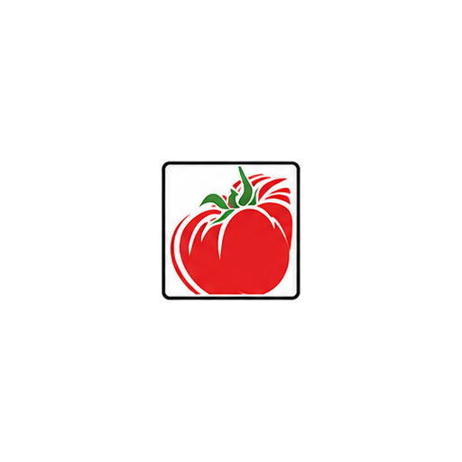
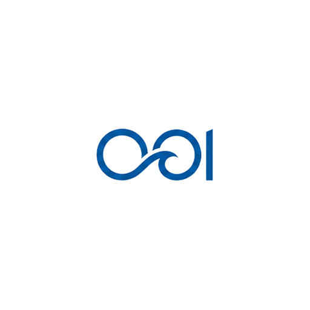
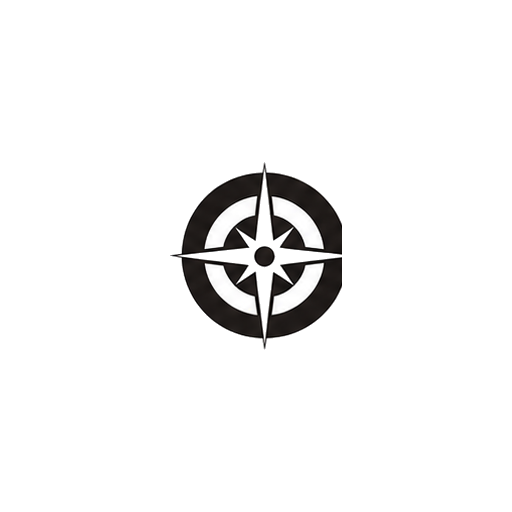
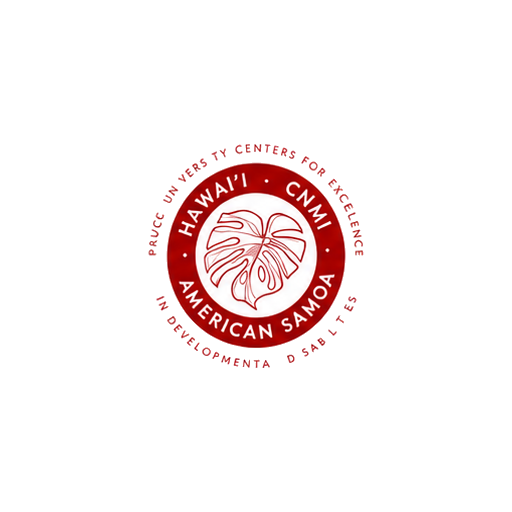
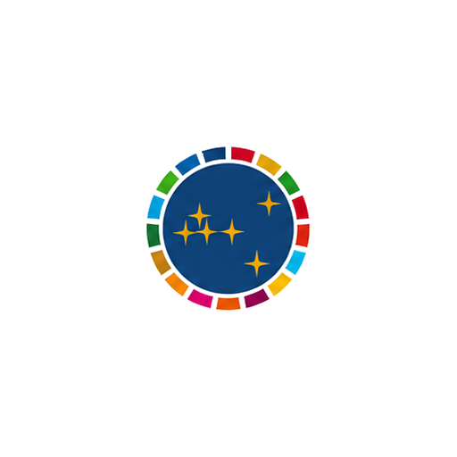
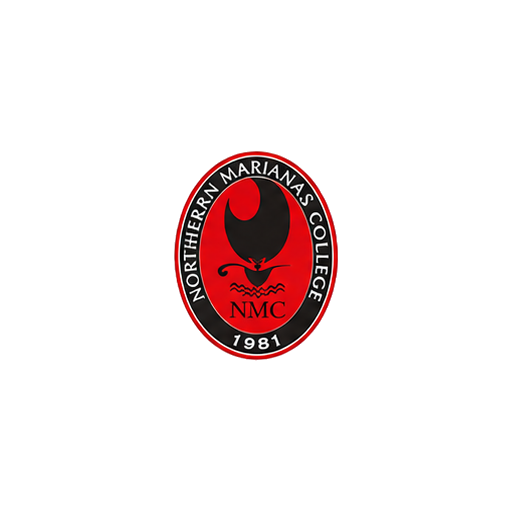

01
About Me
I'm a Data Science major with a minor in Environmental Sustainability Studies at the University of Utah. Born and raised on the island of Saipan in the Commonwealth of the Northern Mariana Islands, I bring an island perspective to everything I do.
I'm deeply interested in interdisciplinary work, using data science as a bridge across fields like environmental science, public health, and sustainability. I believe the most meaningful insights come from connecting disciplines, and I'm driven to apply data-driven approaches to real-world challenges that span traditional boundaries.
Data Science
Major
Environmental Sustainability
Minor
Saipan, CNMI
Hometown
02
Achievements
Independent Research Project Accepted for Funding
Neuroergonomics & Occupational Biomechanics Lab · Apr 2025
Presented at UofU Undergraduate Research Symposium & Rocky Mountain ASB
Neuroergonomics & Occupational Biomechanics Lab · 2025
Built 12-Layer GIS Geodatabase Across 4 Community Garden Sites
Wasatch Community Gardens · May – Jul 2026
Processed & QC'd 12 Years of Ocean Temperature Data via ERDDAP
Ocean Observatories Initiative · Jun – Aug 2025
Created Publication-Quality ENSO Climate Visualizations
Ocean Observatories Initiative · 2025
Designed Green Roof Stormwater Model for Rural Development
C.O.M.P.A.S.S Alternative REU · Jun – Aug 2024
Co-authored Research Chapter for Future Publication
C.O.M.P.A.S.S Alternative REU · 2024
Awarded Benjamin A. Gilman International Scholarship
Singapore Management University · Summer 2025
Named NASA Space Grant Consortium Scholar
University of Utah · 2024 – Present
Graduated Magna Cum Laude — A.A. Liberal Arts, Pre-Engineering
Northern Marianas College · May 2022
03
Experience
Neuroergonomics and Occupational Biomechanics Laboratory
Research Assistant · University of Utah · Salt Lake City, UT
- Proposed an independent research project on occupational noise, muscle fatigue, and EMG analysis that was accepted for funding, supporting the lab's broader work on worker safety and ergonomics.
- Collected and supported experimental data acquisition using Biosemi and E-Prime systems to support ongoing research projects from senior researchers.
- Analyzed EMG and biomechanical data using MATLAB and the EEGLab Library to investigate occupational ergonomics and human performance.
- Presented early findings at the University of Utah Undergraduate Research Symposium and the Rocky Mountain American Society of Biomechanics regional meeting.

Wasatch Community Gardens
GIS Intern · Salt Lake City, UT
- Built a GIS asset management system to map irrigation, garden beds, utilities, and infrastructure across four community garden sites using ArcGIS Pro, ArcGIS Online, and Field Maps.
- Designed a 12-layer geodatabase with coded-value domains, standardized field forms, editor tracking, photo attachments, and automated geometry calculations.
- Collected, validated, and visualized GPS and infrastructure data to produce public-facing and technical maps supporting site operations and long-term planning.
University of Utah Health
IT Support Technician · Salt Lake City, UT
- Supported SharePoint Online migration workflows, including site provisioning, permissions mapping, and data transfers, ensuring data integrity through validation checks.
- Triaged IT tickets and walked users through SharePoint/OneDrive basics, escalating cases and documenting fixes to build repeatable workflows.
- Documented and standardized recurring technical issues and resolutions, improving troubleshooting efficiency and creating reusable support workflows.

Ocean Observatories Initiative
Data Analyst Intern · Woods Hole, MA
- Developed Python scripts and Jupyter Notebook pipelines to retrieve, clean, and aggregate ~12 years of in-situ water temperature and CTD data via ERDDAP, streamlining time-series data.
- Implemented quality control across ETL workflows in Python to verify data integrity, catching inconsistencies in time-series data pulled via ERDDAP and APIs.
- Created publication-quality plots in Matplotlib & ggplot, overlaying ENSO phases on temperature trends across multiple stations.
- Authored comprehensive documentation of ETL-style notebooks, ensuring reproducibility and handoff readiness for interdisciplinary research teams.
CI Compass
Student Fellow · Salt Lake City, UT
- Engaged in a 12-week program focusing on technical and research skills relevant to cyberinfrastructure and data-intensive research.
- Gained contextual understanding of Major Facilities and the data lifecycle, enhancing ability to support collaboration and inquiry.
- Collaborated with peers and mentors to apply learned skills in real-world scenarios, preparing for future roles in cyberinfrastructure and scientific computing.
Center for Student Access & Resources
Peer Mentor · University of Utah · Salt Lake City, UT
- Mentored undergraduate students through personalized academic planning, time management strategies, and guidance on utilizing university resources.
- Organized peer group meetings, socials, and workshops in collaboration with staff, cultivating a supportive community and increasing student engagement.
Salt Lake City Corporation
Constituent Liaison Intern · Salt Lake City, UT
- Managed constituent inquiries and concerns using Salesforce to track case statuses and streamline communication between city officials and the public.
- Prepared detailed reports and case studies for city officials using Microsoft Office tools to analyze data, summarize local issues, and propose actionable solutions.

C.O.M.P.A.S.S | Alternative REU
Data Researcher Lead Intern · Saipan, MP
- Designed and implemented a green roof model analyzing soil composition, moisture retention, and evapotranspiration, supporting stormwater management research for rural development.
- Conducted correlation and t-test analyses in Python, interpreting results to inform actionable conclusions; authored a research chapter for future publication.

University Centers for Excellence in Developmental Disabilities
Student Trainee · Hawaii, HI
- Evaluated the educational and technological needs of individuals with disabilities, ensuring compliance with cultural competence, ethical standards, and developmental disability policies.
- Collaborated with professionals and advocates to identify and implement solutions, enhancing cross-disciplinary communication and inclusivity best practices.

S.P.I.C.E Data Science Institute
Data Researcher Intern · Hawaii, HI
- Analyzed datasets on avian elevation and malaria correlations, creating visualizations with graphic design tools to effectively communicate findings.
- Utilized R and Texas Advanced Community Centers (TACC) software to process research data, demonstrating the ecological impact of bird elevation on avian malaria infection rates.
04
Education
Kahlert School of Computing, University of Utah
B.S. in Data Science · Minor in Environmental Sustainability Studies
Singapore Management University
Data Management with SQL

Northern Marianas College
A.A. Liberal Arts, Emphasis in Pre-Engineering · Magna Cum Laude Honors